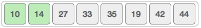

Selection sort is a simple sorting algorithm. This sorting algorithm is a in-place comparison based algorithm in which the list is divided into two parts, sorted part at left end and unsorted part at right end. Initially sorted part is empty and unsorted part is entire list.
Smallest element is selected from the unsorted array and swapped with the leftmost element and that element becomes part of sorted array. This process continues moving unsorted array boundary by one element to the right.
This algorithm is not suitable for large data sets as its average and worst case complexity are of O(n2) where n are no. of items.
We take the below depicted array for our example.

For the first position in the sorted list, the whole list is scanned sequentially. The first position where 14 is stored presently, we search the whole list and find that 10 is the lowest value.

So we replace 14 with 10. After one iteration 10, which happens to be the minimum value in the list, appears in the first position of sorted list.
For the second position, where 33 is residing, we start scanning the rest of the list in linear manner.

We find that 14 is the second lowest value in the list and it should appear at the second place. We swap these values.

After two iterations, two least values are positioned at the the beginning in the sorted manner.
The same process is applied on the rest of the items in the array. We shall see an pictorial depiction of entire sorting process −

Now, we should learn some programming aspects of selection sort.
Step 1 − Set MIN to location 0 Step 2 − Search the minimum element in the list Step 3 − Swap with value at location MIN Step 4 − Increment MIN to point to next element Step 5 − Repeat until list is sorted
procedure selection sort
list : array of items
n : size of list
for i = 1 to n - 1
/* set current element as minimum*/
min = i
/* check the element to be minimum */
for j = i+1 to n
if list[j] < list[min] then
min = j;
end if
end for
/* swap the minimum element with the current element*/
if indexMin != i then
swap list[min] and list[i]
end if
end for
end procedure
To see selection sort implementation in C programming language, please click here.